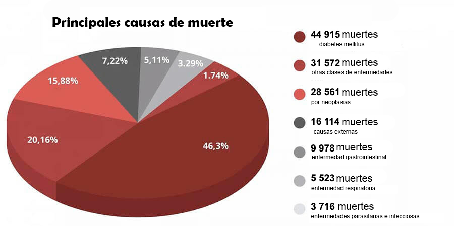

محظور الاكتشاف: في غضون 7 أسابيع فقط ، ستتخلص كريات الدم الحمراء الاصطناعية من مرض السكري وتخفض مستوى السكر في الدم وتزيد من مناعتك.
أثناء تصوير أحد البرامج التليفزيونية الشائعة ، وقعت حادثة تم فيها اكتشاف دعاة طبيين. بدأ أحد المتخصصين المدعوين فجأة يقول شيئًا لم يكن متوقعًا في النص. ما قاله بالتأكيد أيقظ الجماهير في الدراسة ، ولكن الأهم من ذلك أن العاملين في مجال الرعاية الصحية سمعه.
صرح جراح القلب علنًا: إنه بالطبع يناقش في برامجه الفيروس ، لكن لماذا إذن يغض الطرف عن مشكلة أخرى تصيب أكثر من 1.3 مليون شخص كل عام! لماذا لا يتحدث أحد عن أمراض الغدد الصماء؟ لماذا تسكت أن هناك الآن دواء يمكنه التغلب على مرض السكري؟
السكري! إنه القاتل الرئيسي للناس. والجميع يتصرفون وكأن كل شيء على ما يرام. لن تجد أدوات حديثة لحل هذه المشكلة.
يعتبر مرض السكري من أخطر الأمراض. على عكس العديد من الأمراض الأخرى الموجودة في الإنسان ، فإنه لا يؤدي إلى اضطرابات صحية مؤقتة ، ولكنه يتطور بشكل مطرد ، مما يؤدي تدريجياً إلى وفاة الشخص. مرض السكري هو سبب الوفاة التي لا تطاق لملايين البشر ، فهو أشبه بقنبلة موقوتة لا تنفجر على الفور ، ولكن مع اليقين بنسبة 100٪ عاجلاً أم آجلاً سوف يتشتت إلى قطع صغيرة ، بالإضافة إلى أن هذا المرض لا يصاحبه ظهور الأعراض التي تدل على خطره المميت. اليوم يشعر الشخص تمامًا ، وفي اليوم التالي تنام إحدى الذراع ، تبدأ الغرغرينا في التطور أو ينمو ورم سرطاني في الدماغ. وأنت فقط تنكمش من الرجل وتقبل أي إجراء مهما كان عديم الفائدة ضد المرض بدون أعراض الذي تعاني منه بالفعل لفترة طويلة وغير قابل للشفاء إذا تم علاجه بهذه الطريقة.
الناس لا يموتون من الفيروس بل من مرض السكري وعواقبه! تذكر ذلك! قالت Tanzila Aigul ، وهي إحدى الخبراء المدعوين ، في حين أن زملائها الآخرين في الدراسة حاولوا ليس فقط دحض كلماتها ، ولكن أيضًا إغلاق أفواههم حرفيًا.
الإحصائيات لا تصدق! تسبب الوباء في مقتل 25000 شخص ، بينما توفي ما يقرب من 50000 شخص بسبب مرض السكري.
الأمر الأكثر سخافة ومحزنًا في نفس الوقت هو حقيقة أن أخطر عواقب الفيروس ، وهي مرض السكري ، تتطور في 75.87٪ من الحالات! ولكن إذا لم يكن الناس مصابين بهذا المرض ، الذي يدمر جهاز المناعة بشكل كارثي ، لكان الفيروس الذي سيعانون منه لا تظهر عليه أعراض. وفي هذه الحالة ، يقع هؤلاء المرضى في المجموعة الأكثر خطورة. ومرة أخرى ، لا أحد يتحدث عن ذلك ، لأن السؤال الذي يطرح نفسه على الفور: ما الذي يتم فعله بالضبط لمكافحة هذا المرض الخبيث؟
كان الجميع في الاستوديو مرتبكين. بدأ المتخصصون وأطباء العيادة في الجدال ، قاطعين بعضهم البعض. توقف البث وسرعان ما توقف الإعلان ، بينما اصطحب طاقم القناة Tanzila Aigul
تمت إزالة هذا العرض من الهواء. لكن المشاهدين سيتذكرون طويلاً ما حدث في الاستوديو أثناء تسجيله.
قررنا إجراء بحثنا الخاص والعثور على هذا المتخصص.

سورايا ديليا طبيب من أعلى الفئات ، متخصص في العلوم الطبية ورائد في مضاعفات
الأوعية الدموية لمرض السكري.
- يبدو أن جميع زملائك على علم بالفعل بالفضيحة التي حدثت أثناء تسجيل البرنامج. كيف لم يكن خائفًا من الإدلاء بهذا البيان؟
أنا مدرك تمامًا لما أخاطر به ، لكنني لم أستطع الصمت. يحاول الجميع التعامل مع العواقب ، لكن لا أحد يحل المشكلة ويعالج المرض نفسه. أنا طبيبة ، وقد أقسمت اليمين وأحاول إيقافها.
أنا سعيد جدًا لأنك اتصلت بي ويمكنني أن أكرر الكلمات التي قلتها بالفعل ، وبالتالي ألخص بياناتي السابقة. سوف يمر الوباء ، وسيكون هناك لقاح يستخدم بشكل دائم ، وسوف ينجو الناس من كل هذا ، وكذلك أي وباء آخر حدث في كل وقت تاريخنا أكثر من مرة. ومع ذلك ، فإن الفيروسات مثل الطموح والجشع والأكاذيب لن تذهب إلى أي مكان ولن تذهب إلى أي مكان. لا يوجد لقاح لهذا الفيروس.
ماذا تقصد بذلك؟
أعني الأمراض التي يتعامل معها أطبائنا منذ سنوات. أعالج أمراض الغدد الصماء بأخطر آثار مرض السكري. وفي مجالي المهني ، يعتبر الكذب من أكثر الظواهر انتشارًا
أنا متأكد من أن علاج أمراض الجهاز العضلي العظمي والجهاز الهضمي وأي مرض آخر يمكن إجراؤه بناءً على تحليل الأعراض ، ليس فقط التخفيف من تقدم المرض ، ولكن أيضًا إراحة المريض تمامًا. المرض واستعادة صحتك.
والسبب في ذلك هو شركات الأدوية وممثليها الذين يتعاونون مقابل أجر مع أطباء من جميع أنحاء البلاد. والآن ، عندما يمكن لأي شيء تخويف الناس أكثر ، تزيد الشركات أرباحها فقط. يتم تقديم اختبارات البيع ، والمطهرات المختلفة ، والأدوية المستخدمة لكل عرض على حدة ، لأنه في حالة الوفاة ، كل شيء على أي حال سيكون مرتبطًا بالوباء. أرى كل شيء وأفهمه ، وأشعر بالرعب مما يحدث
في بلدنا لا يعالج مرض السكري
- هل تقصد أن كل هذه الأدوية الحديثة لمرض السكري غير فعالة؟
تعتبر أدوية السكري ، الموصوفة للمرضى ، الهدف الرئيسي لنقل الأموال من جيوب المرضى إلى جيوب الأوليغارشية الذين جمعوا ثرواتهم من بيع الأدوية
إنها مخدرات مشروعة ، فكر في الأمر. يأخذ المريض الحبة وتحسن حالته. توقف الدواء عن العمل ويرتفع مستوى السكر مرة أخرى. هذه بداية كل الأدوية. لتجعلك تشعر بتحسن ، عليك فقط أن تأخذ جرعة جديدة.
والأهم من ذلك ، نحن بحاجة إلى فهم ما يلي: في حالات الحاجة الماسة ، تكون الأدوية الكيميائية ضرورية وتلعب دورًا مهمًا. في الحرب العالمية الأولى ، على سبيل المثال ، تم استخدام الهيروين في المعسكرات وبمساعدته تم تحسين حالة الجنود المتضررين ، وتجنب الألم والموت من الصدمة.
ومع ذلك ، إذا كنت تتناول الحبوب بشكل دائم ، فإنها ستدمر صحتك ، تمامًا مثل الهيروين. ليس بهذه السرعة ، لكن مبدأ تأثيره هو نفسه تمامًا ، ولتجنب عواقب تعاطي المخدرات ، يُنصح بشرب عدد قليل من الحبوب. وكلما زاد مرحا لأصحاب الصيدليات وشركات الأدوية.
- ومع ذلك ، كان بعض الناس يتعاطون المخدرات
- يمكن لمدمني المخدرات أيضًا أن يعيشوا حياة طويلة. لكن أي نوع من الحياة هذه؟
عندما يرتفع الضغط ، يعاني الرجال في الخمسينات من العمر بالفعل من التهاب البروستاتا والضعف الجنسي. عندما يعاني الناس من التعب المستمر ، السمنة ، تورم الساقين ، يصعب المشي ، وتنام الأصابع. ثم تحدث اضطرابات معوية. تظهر حصوات الكلى بسبب إفراز الأملاح والسكر.
يمكن أن يؤدي تناول عدد قليل جدًا من الحبوب لفترة طويلة بشكل دائم إلى الإصابة بالسرطان. انظر إلى إحصائيات السرطان. إنه وباء حقيقي!
أنا لا أشير إلى مشاكل بسيطة في هذا السياق ، مثل اضطرابات النوم ، وطنين في الأذنين ، وانخفاض الرؤية. هناك قائمة كاملة للكتابة. لكن السبب دائمًا هو نفسه: ارتفاع مستوى الجلوكوز في الدم ، مما يؤدي إلى الإصابة بمرض السكري الذي لا يحاول أحد علاجه ، بينما الأدوية التي تحل هذه المشكلة موجودة بالفعل وتعطي نتائج ممتازة.
دواء ضد مرض السكري لا يباع في الصيدليات
- أثناء تسجيل العرض ، حاول التحدث عن علاج مبتكر لمرض السكري ، لكنهم طردوه فعليًا من الاستوديو. أي نوع من الأدوية هذا؟ ولماذا يبتعد عنه الصيادلة مثل شياطين البخور بمجرد ذكر اسمه؟
بدأت أتحدث عن مركب طبيعي «».إنه مركب فريد يحتوي على جزيئات حية من الفيتامينات من أصل نباتي
هو تطوير لمركز البيولوجيا الجزيئية. يُعرف أيضًا باسم خلايا الدم الحمراء الاصطناعية ، لأن يحفز إنتاج خلايا الدم الحمراء الشابة ، مما يزيد من تفاعل تخليق الجلوكوز أكثر من 7 مرات! مما يؤدي إلى تطبيع مستويات السكر في الدم.
يقوم مركب بتطبيع استقلاب الجلوكوز داخل الخلايا لسنوات عديدة. ليس من الضروري تناوله بشكل دائم. في غضون 7 أسابيع فقط ، ستتخلص من مرض السكري ، وفي السنوات الخمس المقبلة سيكون السكر في الدم 4.5 مليمول / لتر.
لتطوير ، حصل فريق العلماء على جائزة دولية في مجال البيولوجيا العلاجية. لنهجه المبتكر في علاج مرض السكري.
يبدو أنه بعد هذا الاعتراف ، كان على الصيادلة ببساطة إيقاف البحث عن هذا الدواء والسماح بالحق في تنفيذ . كان على الدولة أن تبدأ في إدخال استخدام المركب. ومع ذلك ، لم يسمع أحد بهذا الاكتشاف.
ممثلو المجال الطبي كرهوا حرفيا هذا المركب. لديهم الآلاف من أسماء الأدوية المختلفة وبيعها يزيد من أرباحهم. لا يمكن للدواء ببساطة أن يدمر النموذج الحالي والطريقة التي يعمل بها. بعد سبعة أسابيع فقط من الاستخدام ، لا يحتاج الناس إلى زيارة الصيدليات مرة أخرى
هذا هو السبب في أن مركب يسبب الكثير من الكراهية. لا أحد يعلن ذلك. حتى أنها معترف بها دوليًا ، ولديها جميع الشهادات اللازمة التي تؤكد فعالية عملها العلمي ، وآلاف المرضى الراضين. هذا هو سبب مقاطعة هذا المنتج. الجميع يتظاهر بأنه غير موجود. وعندما بدأت أتحدث عنه على الهواء مباشرة ، بدأوا في التهديد علانية.
ابدأ العلاج بنفسك
- متى يكون فعالاً؟
الغرض الرئيسي من هو استعادة البنكرياس. هذا يعتمد على عمل الجسم
ينظف الأوعية الدموية على ثلاث مراحل:
- يعيد مستقبلات الأنسولين في أنسجة الجسم ، وبالتالي تنظيم إنتاج الأنسولين في الجسم
- يخفض نسبة السكر في الدم بعد الأيام القليلة الأولى من الاستخدام
- يعيد مستوى البوتاسيوم وفي نفس الوقت يعزز إنتاج خلايا مناعية خاصة تشارك في ترميم البنكرياس
يبدأ في عملية إحياء وتجديد جميع أنسجة الجسم ، من الأعضاء الداخلية إلى الأوعية الدموية. هذا يسمح لك بالتخلص من جميع الآثار الضارة التي تطورت في الجسم منذ ظهور المرض.
تسمى عملية العلاج الذاتي هذه بإعادة ميلاد الذات. هذه العمليات طبيعية و هو محفزها ، والمفتاح هو أنها تبدأ عملية إعادة الميلاد الذاتي.
تخلص من سبعة أمراض في أسبوع واحد
- ما هي النتائج عند تناول ؟
1. تطبيع مستويات السكر في الدم
المركب له تأثير مفيد للغاية. على وجه التحديد ، يقلل من مقاومة الأنسولين. تخترق المكونات النشطة بيولوجيًا خلايا العضلات والأنسجة الدهنية والكبد ، ولها تأثير يؤدي إلى إدراك أفضل للهرمون الموجود في الدم. في الأدبيات العلمية الطبية ، تُعرف هذه العملية باسم التمثيل الغذائي الثانوي ، أي تكوين الخلايا الثانوية. نتيجة لذلك ، مع مرور الوقت ، تبدأ الخلايا في استهلاك الجلوكوز بقوة أكبر ، مما يؤدي إلى انخفاض محتواه من الدم. هذه هي الطريقة الأكثر أمانًا للجسم لاستهلاك الجلوكوز.
2. انتعاش الأوعية الدموية
لا يقتصر التأثير الرئيسي لـ على خفض نسبة السكر في الدم فحسب ، بل يعمل أيضًا على إعادة مستويات الجلوكوز إلى وضعها الطبيعي. بالإضافة إلى تحلل نسبة السكر التي ترسبت بالفعل على جدران الأوعية الدموية ، والتي بدت مجمدة ، فإنها تستعيد قدرتها على الانقباض والتوسع. تختفي الجلطات الدموية أيضًا ، وبالتالي تنظف الأوعية الدموية وتستعيد الشعيرات الدموية. نتيجة لذلك ، لا يرتفع الضغط ، ويزول التعب والأرق ، وتلتئم الجروح والجروح بشكل أسرع. ليس فقط نسبة السكر في الدم طبيعية ، ولكن مستوى الجلوكوز ...
3. يحسن حالة الجلد والعظام والعضلات
يتم استعادة الجلد المتضرر بشدة. تلتئم الجروح ، ويتوقف الجلد عن الترهل والجفاف. إنه نفس الشيء بالنسبة للعظام ، حيث يتم استعادة تركيبتها الصحية ، ولم تعد هشة. يحدث الشفاء في جميع الأنسجة ، وتصبح العضلات مرنة مرة أخرى.
4. يحسن الرؤية
حتى ضعف البصر الشديد سيبدأ بالتعافي تدريجيًا
- Lتتحسن الرؤية في نطاق 0.5 إلى 2.1 وحدة.
- يطبيع ضغط العين
- يتم تقليل أعراض إعتام عدسة العين
5. القضاء على مشاكل الوزن الزائد
تعتبر زيادة الوزن من الأعراض التي تؤدي إلى تفاقم حالة مريض السكري بشكل ملحوظ حتى 4-5 مرات. بالإضافة إلى ذلك ، فإن أحد تأثيرات مركب هو فقدان الوزن على وجه التحديد.
6. الانتعاش الانتصاب
يعاني العديد من مرضى السكري الذين تم تشخيص إصابتهم بالسكري من ضعف الانتصاب. أحد أكثر التأثيرات المدهشة لـ هو تطبيع مستويات هرمون التستوستيرون واستعادة الانتصاب الصحي. حتى في الحالات التي يكون فيها مرضى الفئة العمرية أكثر من 70 عامًا. الرجال سعداء وسعداء لأنهم وجدوا أن قوتهم الذكورية قد استعادت بالكامل.
7. يبدأ الجهاز المناعي في العمل
تحسين تدفق الدم إلى أنسجة العظام التي تشارك في تخليق الخلايا المناعية. كما يؤدي إلى زيادة وظائف الحماية للجسم ...
لا يحمينا الجهاز المناعي من الفيروسات فقط. الوظيفة الرئيسية للمناعة القوية هي حماية الجسم من الخلايا السرطانية. يتعرف نظام المناعة الصحي والقوي على الخلايا السرطانية ويدمرها في الوقت المناسب. يساعد على منع تطور الورم.
حتى لو كان الجهاز المناعي فعالًا بنسبة 50٪ فقط ، فإنه يخلق حاجزًا لا يمكن التغلب عليه للفيروسات. وهذا مهم للغاية اليوم.
قطع ممثل عن اتحاد الصيادلة محادثة هاتفية معنا بمجرد ذكر عقار
عبد العزيز أسد. ممثل اتحاد الصيادلة.
اتصلنا برئيس نقابة الصيادلة لمعرفة سبب عدم توفر صيدليات .
- مرحبا السيد الأسد! من فضلك أخبرنا لماذا تتجنب الصيدليات وتتجنب هذا الدواء؟ هل سمعت عن مثل هذا المركب؟
- لماذا تطلقون الاستفزازات ؟! لن أجيب على مثل هذه الأسئلة !! هم لا يهمك على الاطلاق!
- تسمع الهاتف الذي تم اغلاقه ...
كيف يمكنك شراء ؟
بعد محادثة مماثلة مع مدير نقابة الصيادلة في بلدنا ، من الواضح أن المركب المعني غير موجود في الصيدليات ومن غير المرجح أن يظهر هناك في أي وقت قريب. لكن هل ما زال من الممكن شرائه؟
- نعم ، يمكن لأولئك الذين يرغبون في شراء وجميع أولئك الذين يرغبون في شراء القيام بذلك مباشرة من المصنع عن طريق الطلب عبر الإنترنت.
- لماذا لا يمكن طلب إلا عبر الإنترنت
لثلاثة أسباب رئيسية:
- ضمان الجودة. يتم شحن مباشرة إلى العميل مباشرة من المصنع/li>
- الحماية ضد الموزعين. حتى لا يتمكن أحد من إعادة بيع المركب بسعر زاد 10-20-30 مرة
- تسليم سريع بالبريد الجديد
خصم للمتقاعدين في كل منطقة
يوجد حاليًا برنامج دعم اجتماعي للجميع. كجزء من هذا البرنامج ، يمكنك طلب بسعر مخفض. هذا جزء من برنامج متميز للوقاية من مرض السكري.
يُمنح الخصم بشكل أساسي للمشترين في الفئة العمرية ، الذين تزيد أعمارهم عن 47 عامًا والذين يعيشون في مناطق تمثل فيها الحالة الوبائية خطرًا.
أيضًا ، أوصي بشدة: لا تضيعوا وقتكم! لن يتم منحك فرصة ثانية. من غير المعروف كم من الوقت سيستمر هذا البرنامج والمدة التي ستكفي فيها كمية .
احصل على الآن!
للحصول على كجزء من البرنامج المميز ، ستحتاج فقط إلى هاتف محمول
أدخل رقم هاتفك الخلوي في نموذج الطلب وانقر فوق Get
انتباه! طلب واحد فقط لرقم هاتف محمول ممكن!
في الوقت الحالي ، يتم قبول الطلبات ومعالجتها على مدار الساعة ، ولكن بسبب عبء العمل الثقيل على موظفينا ، قد تضطر إلى الانتظار قليلاً.
انتباه!
يرجى ملاحظة أن الصورة العاكسة للأمانيجب أن تكون على الموقع:
يضمن الهولوغرام الأمني جودة المنتج بنسبة 100٪. إنه يشير إلى أنك على الموقع الرسمي وأنه سيتم إرسال حقيقي إليك ، بالإضافة إلى المشورة والدعم اللازمين.
تعليقات